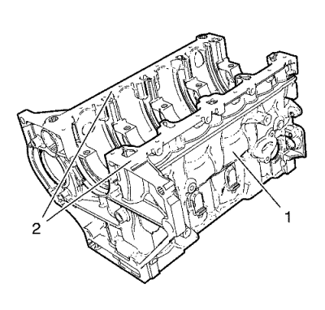
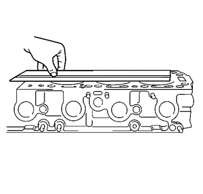
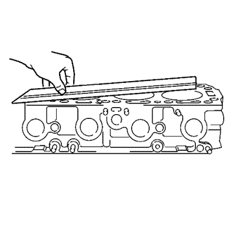
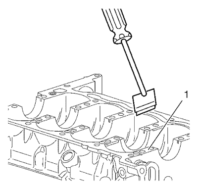
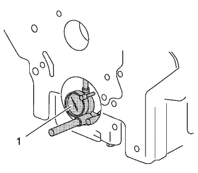
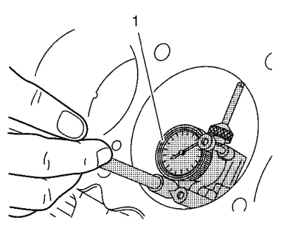

Limpieza e inspección del bloque del motor.
Herramientas especiales
EN-8087 Calibrador de cilindros
Si desea informarse sobre herramientas regionales equivalentes, consultar Herramientas especiales .

- Limpie el material de sellado de las superficies de conexión de junta (2).
- Limpie el bloque motor (1) y la carcasa inferior del cigüeñal en un depósito de limpieza con disolvente adecuado para aluminio. Consulte Adhesivos, líquidos, lubricantes y selladores para el disolvente recomendado.
- Limpie el bloque motor con agua limpia o vapor.
- Limpie los conductos de aceite.
- Limpie los orificios ciegos.
- Pulverice aceite de motor en las superficies rectificadas y los diámetros interiores de cilindro.
- Compruebe los orificios roscados. Limpie los orificios roscados con un cepillo para rifles. Si fuera necesario, taladre los orificios e instale suplementos de rosca. Consultar Piezas de suplemento de roscas .

Nota: No intente rectificar la carcasa inferior del cigüeñal para adaptarla a las superficies del bloque motor.
- Inspeccione el bloque motor por si estuviera deformado a lo largo o a lo ancho en las superficies de sellado.

- Inspeccione el bloque motor por si estuviera deformado en las diagonales.
Si la superficie estuviera fuera de los valores especificados, sustituya el bloque. No rectifique el bloque.

- Limpie el material de sellado de las superficies de conexión de la junta (1) en la carcasa inferior del cigüeñal del lado del cárter de aceite.

- Compruebe los orificios de cojinete de bancada del cigüeñal. Utilice la galga de espesores EN-8087 (1) para medir la concentricidad y alineación de los orificios de cojinete.
- Sustituya el bloque motor y la bancada si los orificios de cojinete del cigüeñal no están dentro de los valores especificados.

- Compruebe el diámetro de los cilindros usando el indicador EN-8087 (1). Compruebe los siguientes elementos:
- Compruebe las especificaciones del interior del cilindro. Consultar
Especificaciones mecánicas del motor : 1.8L 2H0 .
- Si los diámetros interiores de los cilindros no cumplen las especificaciones, sustituya el bloque del motor.
| © Copyright Chevrolet. All rights reserved |